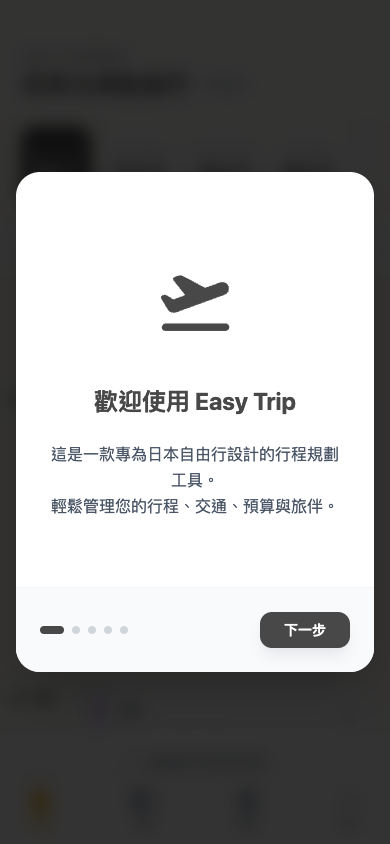
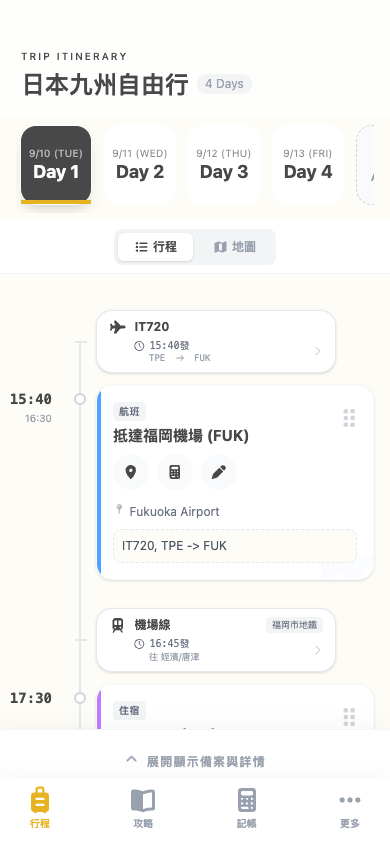
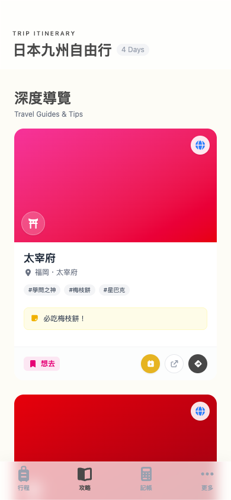
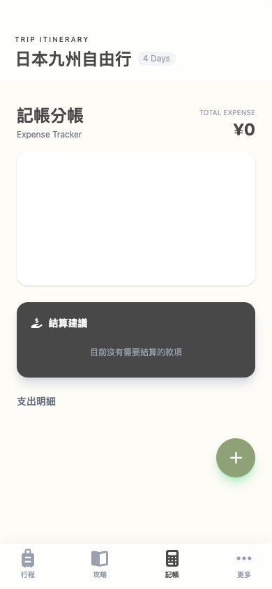
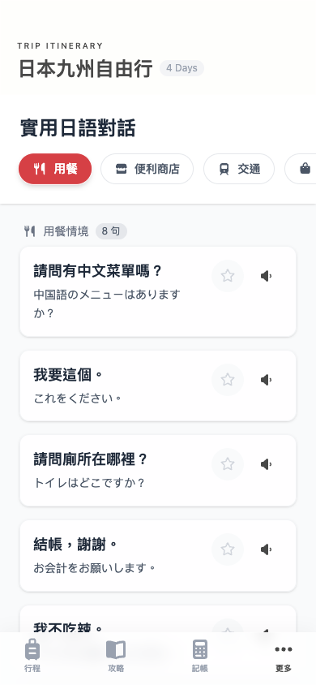
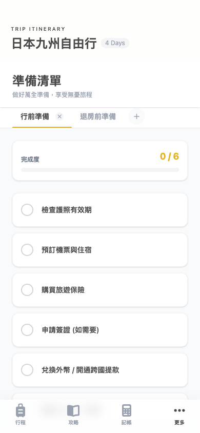
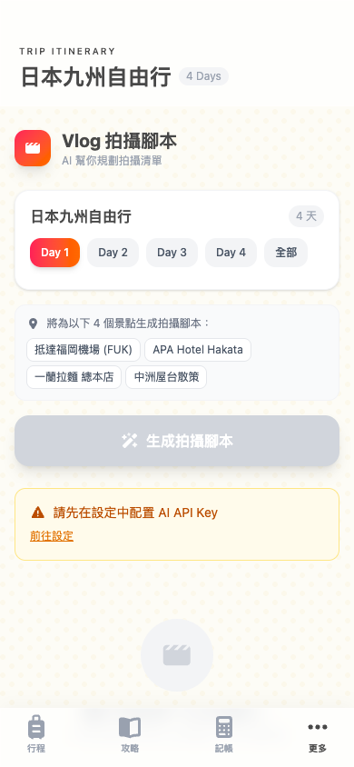
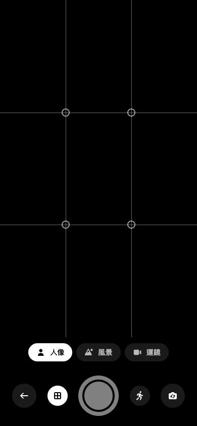

Project Architecture & Feature Guide
Easy Trip 旅遊規劃 PWA
以 Vue 3 + TypeScript + Vite 打造的無後端旅遊規劃應用，全部狀態存於瀏覽器 localStorage。
整合地圖、AI 生成、記帳分帳、姿勢辨識相機等 7 大功能模組，是一份給開發人員快速上手的視覺化架構導覽。
📌 專案簡介
🧠
無後端設計
沒有伺服器與資料庫，所有資料透過 Pinia + pinia-plugin-persistedstate 寫入 localStorage（key：easy_trip_data_v7）。
🤖
AI 深度整合
使用 Google Gemini（模型與設定統一由 src/services/aiModels.ts 管理，可於設定中切換），生成攻略、行程、對話與 Vlog 腳本，API Key 由使用者於設定中輸入，不使用環境變數。
📱
PWA 可安裝
透過 vite-plugin-pwa 支援離線與安裝到主畫面，並支援 Web Share Target 讓使用者從其他 App 分享連結進來。
🏗️ 系統架構圖
7 個路由畫面共用兩個 Pinia Store，並透過 aiService.ts 統一與 Google Gemini 溝通；AI 相機模組則直接串接裝置硬體感測器。
src/router/index.ts"] R --> V1["ItineraryView /"] R --> V2["GuidesView /guides"] R --> V3["AccountingView /accounting"] R --> V4["ConversationView /conversation"] R --> V5["ChecklistView /checklist"] R --> V6["VlogScriptView /vlog-script"] R --> V7["AiCameraView /ai-camera"] V1 --> ST["🗃️ useTripStore
src/stores/trip.ts"] V2 --> ST V3 --> ST V5 --> ST V6 --> ST V4 --> ST2["🗃️ useConversationStore
src/stores/conversations.ts"] ST -- "persistedstate" --> LS[("💾 localStorage
easy_trip_data_v7")] ST --> AI["🤖 aiService.ts"] ST2 --> AI V2 --> AI V6 --> AI AI --> GEMINI[("☁️ Google Gemini API")] V7 --> HW["📷 getUserMedia +
MediaPipe Pose +
DeviceOrientationEvent"] classDef store fill:#ccfbf1,stroke:#0d9488,color:#0f766e,font-weight:bold; classDef view fill:#eff6ff,stroke:#3b82f6,color:#1e3a8a; classDef ext fill:#fef9c3,stroke:#ca8a04,color:#713f12; class ST,ST2 store; class V1,V2,V3,V4,V5,V6,V7 view; class GEMINI,LS,HW ext;
🌳 功能結構樹
以資料夾/功能層級呈現的完整清單，點擊下方對應卡片可快速跳轉至該功能的詳細技術說明。
- 📦 Easy Trip ├─ 🚀 新手導覽（歡迎 / 功能介紹 / AI 助手 / 範例資料 / PWA 安裝） ├─ 🗺️ 行程規劃 / │ ├─ 清單模式（時間軸）／地圖模式（Leaflet） │ ├─ 拖曳排序 + 時間自動重算 │ └─ 交通串接、備案庫、預算預估 ├─ 📖 深度導覽 /guides │ ├─ 攻略卡片牆（想去 → 已排程 → 已去過） │ └─ AI 智慧匯入（解析連結／文字） ├─ 💰 記帳分帳 /accounting │ ├─ 甜甜圈圖分析（Chart.js） │ └─ 貪婪演算法自動結算 ├─ 💬 日語對話 /conversation │ ├─ 情境短句庫 + AI 生成／翻譯 │ └─ Web Speech API 語音朗讀 ├─ ✅ 準備清單 /checklist │ └─ 分類待辦 + 視覺化進度條 ├─ 🎬 Vlog 拍攝腳本 /vlog-script │ └─ AI 分鏡腳本生成 + 連結相機練習 └─ 📸 AI 智慧相機 /ai-camera ├─ 人像模式（MediaPipe Pose 舉手拍照） ├─ 風景模式（陀螺儀水平儀） └─ 運鏡練習模式（幽靈框引導）
🧩 技術棧一覽
核心框架
Vue 3.5（Composition API）、TypeScript、Vite 7
狀態管理
Pinia 3 + pinia-plugin-persistedstate
路由
Vue Router 4，7 個頁面，4 個 lazy-loaded
樣式
Tailwind CSS 4 + Sass
地圖
Leaflet（動線繪製、Marker、自動 fitBounds）
圖表
Chart.js + vue-chartjs（甜甜圈圖）
拖曳排序
SortableJS
AI
@google/genai（Gemini，模型清單集中於 aiModels.ts，googleSearch 工具可於設定中開關）
電腦視覺
@mediapipe/tasks-vision（PoseLandmarker，GPU delegate）
PWA
vite-plugin-pwa（安裝提示、Web Share Target）
圖示
FontAwesome（vue-fontawesome）
裝置感測
getUserMedia、DeviceOrientationEvent、Web Speech API
↓ 功能模組詳解 ↓
🚀 新手導覽 Onboarding Tour
OnboardingModal.vue使用者初次進入 App 時自動彈出的 5 頁導覽，降低學習曲線並教學 PWA 安裝方式。
- 歡迎頁：品牌形象與定位介紹
- 核心功能介紹：行程 / 交通 / 記帳 / 對話 四大主軸
- AI 智慧助手說明：提醒需在設定輸入 API Key
- 範例資料提示：告知目前為 Demo 資料，可於設定清空
- 安裝應用程式教學：原生安裝按鈕或 iOS 手動加入主畫面
關鍵實作
currentSlide響應式變數 +<transition-group name="slide">做滑動特效- 監聽
beforeinstallprompt，iOS 不支援則自動 fallback 顯示手動教學 - 使用
useZIndexcomposable 確保 Modal 永遠最上層

🗺️ 行程規劃 Itinerary
路徑 /
整個系統的主入口，整合地圖動線、交通建議、費用預估與行程備案的綜合控制中心。
- 雙模動態檢視：清單／地圖（Leaflet 繪製當日路徑）切換
- 拖曳調度：SortableJS 拖動後自動往後推算所有行程時間
- 交通串接：每筆行程間自動建立交通區塊，可手動或 AI 推薦轉乘
- 行程備案：可一鍵將備案「升級」為正式行程
- 即時費用統計：支援 JPY ↔ TWD 匯率換算
拖曳排序時間連鎖反應（Ripple Effect）
📖 深度導覽 Guides
路徑 /guides
個人的「景點靈感收藏庫」，可從網路文章一鍵轉化成攻略卡並與行程聯動。
- 攻略收藏牆：圖片、評分、標籤瀑布式呈現
- 狀態流轉：想去 → 已排程 → 已去過
- 一鍵加入行程：選天數與時段即可轉為 Event
- AI 智能匯入：貼上連結／文字即自動解析成結構化攻略
- Web Share Target：手機分享連結可直接開啟 App 匯入
AI 匯入 + 分享至 App 流程
System Instruction 限定 JSON Schema"] E --> F["解析出 highlights / tags / thumbnail_url 等欄位"] F --> G["寫入 store.attractionGuides"] G --> H["攻略卡片牆即時顯示"] H -->|"一鍵加入"| I["AddToItineraryModal 選天數/時段"] I --> J["轉為 Event 並加入 store.days"]
💰 記帳分帳 Accounting
路徑 /accounting
團隊出遊的共用財務中心，自動計算最精簡的拆帳方案，避免人工對帳。
- 視覺化儀表板：Chart.js 甜甜圈圖呈現分類佔比
- 支出明細：可設定「平均分攤」或「自訂比例」
- 智慧結算：自動算出「A 應轉給 B 多少錢」，最少轉帳次數
結算演算法（Greedy Transfer Resolution）
付款者 +amount／參與者 -分攤額"] B --> C{"balance 正負?"} C -->|"> 0"| D["債權人 creditors"] C -->|"< 0"| E["債務人 debtors"] D --> F["Step2: 雙指標排序"] E --> F F --> G["Step3: 貪婪演算法同步消減金額"] G --> H["transfers[]：from → to：amount"]
💬 實用日語對話 Conversation
路徑 /conversation
解決旅日語言障礙：內建情境短句 + AI 客製化翻譯／生成 + TTS 語音朗讀。
- 情境標籤：交通、住宿、購物、海關、自訂
- AI 雙模式：純翻譯 or AI 情境推薦潤飾
- TTS 朗讀：
speechSynthesis強制lang=ja-JP，並搜尋日語音色、放慢語速 0.9
✅ 準備清單 Checklist
路徑 /checklist
行李與行前準備核對工具，具備分類管理與進度視覺化。
- 多分類頁籤：出發前待辦 / 隨身物品 / 行李箱衣物，可自訂新增刪除
- 進度回饋：勾選項目淡化 + 刪除線，進度條動畫漲滿
- 快速輸入：Sticky 輸入列，Enter 鍵連續新增
實作重點：<transition-group name="list"> 做淡化位移效果；watch 深層監聽避免刪除中的分類造成白畫面。
🎬 Vlog 拍攝腳本
路徑 /vlog-script
依據使用者行程，由 AI 打造專業分鏡腳本，並連結相機練習運鏡。
- 天數篩選：單日或全部行程
- AI 分鏡：場景、主體動作、運鏡手法（Pan / Tilt / Static / Tracking）、秒數
- 連結實機訓練：點擊「練習此運鏡」跳轉 AiCameraView 對應模式
(時間/標題/地點/分類)"] B --> C["Gemini：Professional Travel Vlog Director Prompt"] C --> D["輸出 JSON 陣列（禁止 Markdown）"] D --> E["Regex /\\[[\\s\\S]*\\]/ 強制擷取合法 JSON"] E --> F["渲染分鏡卡片"] F --> G{"運鏡手法受支援?
cameraToMoveMap"} G -- 是 --> H["顯示「練習此運鏡」按鈕"] H --> I["router push /ai-camera?mode=vlog&move=pan-right"] G -- 否 --> F
📸 AI 智慧相機
路徑 /ai-camera
利用裝置硬體與 Web AI 模型解決「沒人拍照」「風景歪斜」「運鏡手震」三大痛點。
- 人像模式：MediaPipe Pose 偵測雙手舉高頭部 → 3 秒倒數自動拍照
- 風景模式：
DeviceOrientationEventGamma 角度 < 1° 判定水平完美 - 運鏡練習模式：幽靈框引導 + 速度過快紅色警告
三大模式決策流程
取得 nose/leftWrist/rightWrist"] C --> D{"leftWrist.y < nose.y
&& rightWrist.y < nose.y ?"} D -- 是 --> E["3 秒倒數 → canvas 截圖 PNG"] D -- 否 --> C B -->|"風景 Landscape"| F["監聽 Gamma 角度"] F --> G{"Gamma < 1° ?"} G -- 是 --> H["水平儀變綠加粗"] G -- 否 --> F B -->|"運鏡練習 Vlog"| I["顯示幽靈框 Ghost Box"] I --> J["比對 Alpha/Beta 累積轉動量"] J --> K{"轉動速度是否過快?"} K -- 是 --> L["顯示紅色警告：太快了"] K -- 否 --> M["進度條推進 #vlogProgress"]
onUnmounted 必須執行 cancelAnimationFrame、track.stop()，避免記憶體洩漏與鏡頭常亮發熱。
🗂️ 核心資料模型
定義於 src/stores/types.ts，外部元件一律從 stores/trip.ts re-export 引入型別。
| 型別 | 說明 |
|---|---|
| Event | 行程事件，category: 'fun'|'food'|'shop'|'stay'|'transport'|'flight' |
| Day | 一天，含 dateStr（格式 M/D (Mon)）與 events[] |
| Guide | 景點攻略，status: 'want_to_go'|'planned'|'visited' |
| Transport | 交通段，type: 'walk'|'public'|'express'|'ferry'|'taxi'|'drive'|'flight' |
| Expense | 費用，支援 6 種 splitMethod |
| Settings | 含 aiSettings（apiKey, model, customPrompt） |
dateStr, events[]"] --> Event["Event
category, time, lat/lng"] Event --> Transport["Transport
type, duration"] Guide["Guide
status"] -->|"加入行程"| Event Expense["Expense
payer, involved[], splitMethod"] -.-> Day Settings["Settings
aiSettings.apiKey"] -.-> AIService["aiService.ts"]
🔗 相關文件連結
此頁由 docs/ 底下之 Markdown 說明文件彙整生成，供開發人員快速理解專案架構。